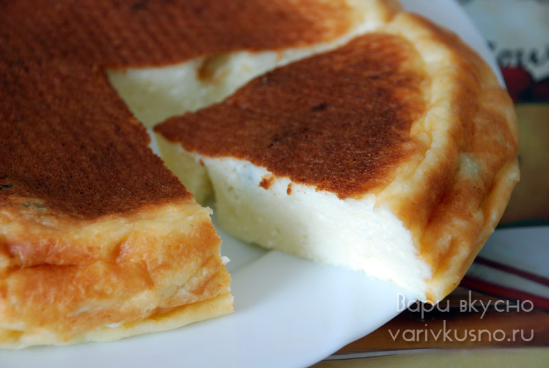

Твороженная запеканка
СПОСОБ ПРИГОТОВЛЕНИЯ1. Взбить яйца миксером 2–3 минуты, пока они не станут пышной массой. Добавить сахар, снова взбить. Дальше добавлять по очереди творог, кефир, манку, ваниль, соль и разрыхлитель. В конце добавить изюм и перемешать. Тесто получается довольно жидкое.
2. Смазать емкость мультиварки сливочным маслом или маргарином.
3. Выложить тесто в емкость. Поставить на режим «Выпечка» на 45 минут. Если у вас мультиварка маленькой емкости, как у меня, то слой теста получается очень толстым. В таком случае вы можете либо разделить обозначенное количество на 2 партии, либо увеличить время выпекания на 20–30 минут.
4. Запеканка получается очень нежной. Если верх немного бледноват — можно присыпать корицей или сразу смазать вареньем.

Приятного аппетита!
Больше информации здесь \/ \/ \/
И.Н.Ф.А